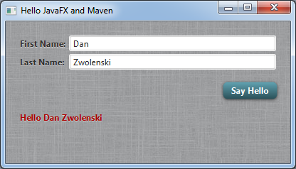

JavaFX Quickstart Project
The JavaFX Maven plugin includes a quickstart template for creating a Maven-ready JavaFX project.
Before starting, make sure you have fixed your classpath
Step 1: generate the project
Run the following Maven command:
mvn archetype:generate
-DarchetypeGroupId=com.zenjava
-DarchetypeArtifactId=javafx-basic-archetype
-DarchetypeVersion=8.1.2.1You will be prompted for some parameters:
- groupId: use your domain, or make one up that describes you (e.g. "com.mycompany")
- artifactId: a name for this application (without spaces) (e.g. "my-jfx-project")
- version: the version of your app, leave as default for a new project
- package: the base package to use to put Java classes in. Usually combine your domain with your app name (e.g. "com.mycompany.myjfx")
- organizationName: the human-friendly name of your organization (e.g. "My Company")
This will create a new directory based on the artifactId you entered. The new project will be a simple Maven project, with the following hierarchy:
+ my-jfx-project
- pom.xml
+ src
+ main
+ deploy
+ package
+ macosx
- my-jfx-project.icns
+ windows
- my-jfx-project.ico
+ java
+ com
+ mycompany
+ myjfx
- HelloController.java
- MainApp.java
+ resources
+ fxml
- hello.fxml
+ images
- background.jpg
+ styles
- styles.css
- log4j.xmlThe main entry point for the application is the MainApp.java class. You can rename and edit this to suit your needs.
The example code demonstrates a few common JavaFX practices but you do not have to use these. FXML is included for example to load the HelloController. If you don't want to use FXML, delete the FXML directory and change the code to use plain JavaFX code.
The code also makes use of some useful libraries, like log4j and MigPane, but you can also remove these and go as vanilla as you like. The structure provided is just a starting point for you to edit and build on to make your JavaFX application however you want it to be.
Step 2: build the project
Change directory into your newly generated project:
cd my-jfx-project
The build the project using standard Maven commands:
mvn clean install
This will generate a 'target' directory, which will contain a JAR file of your application and its resources.
Step 3: run the application
Start the JavaFX application using the JavaFX Maven plugin's run command:
mvn jfx:run
You should see a basic hello world style dialog popup like so:
Step 4: get busy coding
You now have a working skeleton project which you can build upon to create your next awesome JavaFX application. Since you are using Maven, you can simply open the POM file in your favourite IDE and your project will be automatically configured for you with the classpath all setup, etc.
Here’s the links for using Maven with your IDE:
You can now start hacking away at the project code to make it your own. Delete whatever you don't want, add what you do want. There is nothing ZenJava specific in the generated code, it is all standard JavaFX. The sample code includes some useful libraries (like logging and MigPane) but if you don't want to use these, simply delete them from the POM and remove the corresponding code.
Step 5: distribute your application
To distribute your JFX application, you just need to pick one of the distribution options available via the JavaFX Maven Plugin. For example, if you want to use a native installer (recommended), then run:
mvn clean jfx:native
The resulting native installer will be built depending on what operating system you are running on. It will be found under the '/target/jfx/native/bundles' directory.